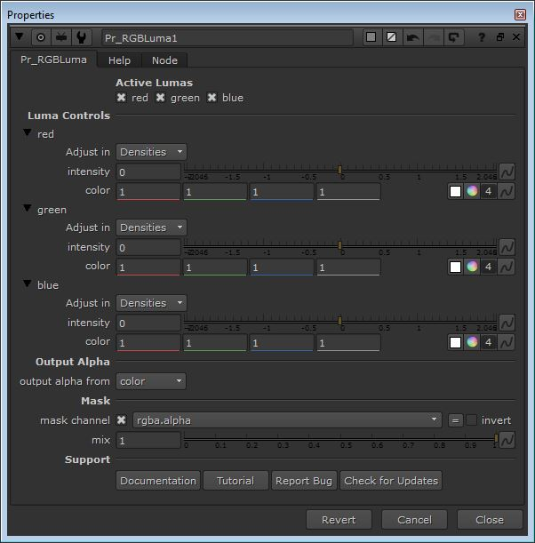

Description:
Pr_RGBLuma is a tool to extract RGB light from a RGB Luma pass and to compose it on a Color pass. It also provide controls for controlling extracted light.

Inputs:
Pr_RGBLuma has three inputs:
•RGB Luma input - This input takes RGB Luma pass, this pass stores lighting information from a 3D application in Red, Green and Blue channels. You can find a note about rendering RGB Luma pass in Special Note.
•Color input - This input takes Color pass, it could be named differently in variety of renders but Color pass is a pass which contains only color of a image without any other properties such as reflection, specular, etc. You can find a note about rendering Color pass in Special Note.
•Mask input - This is a optional input, if you want to limit the light to a specific region, feed in matte for limiting region.
Special Note:
•Rendering RGB Luma pass - In your 3D application apply a standard material (In Maya and many applications it is a Lambert material) basically it is a material only with diffuse property, apply it to all visible geometries in your 3D scene, set diffuse property to 100 percent and set diffuse color to White in material. In your 3D scene you may have many lights used. Make groups of these lights, each group will have three lights. Set color of first light in group to Red, color of second light to Green and color of third light to Blue and turn of shadow for all lights if you are wanting to control the shadow separately while compositing using Pr_RGBShadow or manually. Render the scene with only one light group active and other light groups deactivated, follow this process until you complete rendering with all light groups. Render in 16 bit or 32 bit float for more control and detail, rendering in 8 bit is not recommended. If you have only one or two lights in your scene, set color of first light to Red and color of second light to Green and the process explained earlier.
•Rendering Color pass - You can render Color pass from any renderer of a 3D application, you can find Color pass (your renderer may have different name for it) in AOV's list of your renderer. In Mental Ray it is called Diffuse Material Color, add this pass to your render list and render it. Render in 16 bit or 32 bit float for more control and detail, rendering in 8 bit is not recommended.
•Compositing Tip - If you have Occlusion pass compose it with Color pass before feeding it to Color input.
•Further Reference - https://vimeo.com/138289995 (A tutorial by Chetal Gazdar explaining RGB Light Workflow from Maya to Nuke, you can use Pr_RGBLuma for Nuke process.)
Known Bug:
Click here for more information.
Tutorial:
Tutorial Link - https://youtu.be/-KFrRrStwR0